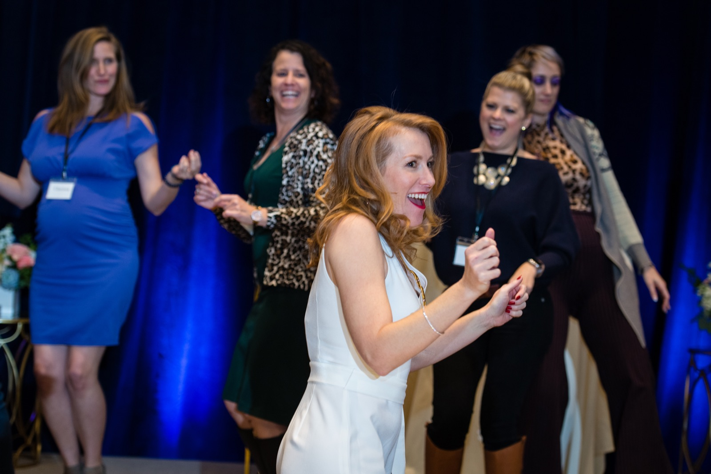

This is what it looks like for the divine to rise
We've started to embark on a Year 9 cycle, with women coming into power and the divine feminine rising… and today was the first day we got to feel what that would actually be like.
Women around the world have been responding to my posts in tears, so moved, and men and women both are feeling hopeful. This is what it looks like for the divine to rise.
I'm feeling this and seeing it as just one step. It's all of our opportunity, and our duty, to keep riding this wave of hope and to make the change we're here to make.
I'm curious… what change are you here to make?
Virtual hugs,
Tamara 🌹